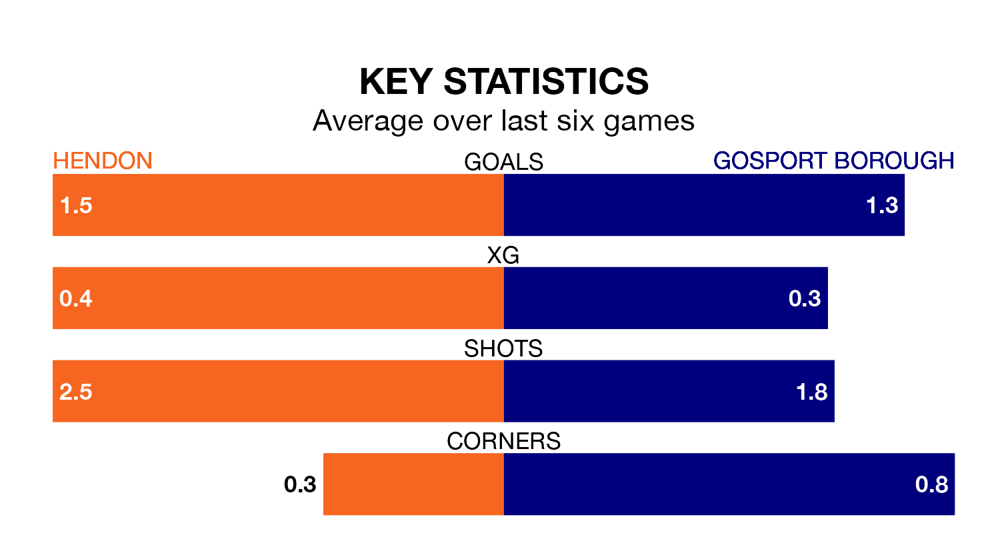

Gosport Borough travel to Silver Jubilee Park for Saturday's match against Hendon looking to bounce back from defeat last time out in the Southern League Premier South.
Gosport, who sit second in the league after 39 games, fell to a 2-1 home defeat to Hayes and Yeading United on April 13.
They face a Hendon side who secured a draw in their last match, a 1-1 tie with Merthyr Town, and who sit ninth in the table.
In the last 10 years, Hendon and Gosport have played each other on seven occasions. Hendon won one of them, Gosport five, and they drew once.
On average, Hendon scored 0.7 goals and Gosport 1.7 in those matches.
Their last meeting was on November 11, when Gosport won 2-1 at home.
With 69 goals in 39 games so far this season, Gosport are scoring more than average in the league with 1.8 goals per game. And they are conceding fewer than average, letting in 40 goals at a rate of 1.0 per game.
Hendon, meanwhile, are average scorers, with 1.7 goals per game. They have conceded 1.6 goals per game.
The hosts are in mixed form in the Southern League Premier South, with two wins and three draws from their last six games.
With three wins and a draw over that period, Borough's form is slightly better – they have taken 10 points from 18, compared to Hendon's nine.
Updated: 15:40 (UTC), 18/04/24